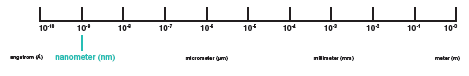

How big is a nanometer? Nano means "billionth", so a nanometer is one billionth of a meter. In other words, the nanoscale is 1000 times smaller than the microscopic scale and a billion (1000 million) times smaller than the world of meters that we live in. Due to dominance of spatial, temporal and dynamic variations
in the nanoscale era, it is prudent for companies to try to mitigate the potential risks of nanoparticles during the design stage rather than downstream during manufacturing or customer use. Ways to solve these challenges include having precise design margins and adaptive design techniques..
Suspendisse bibendum est eget risus posuere, quis aliquam arcu varius. Vivamus efficitur lacinia urna, mollis ultrices mi dictum a. Donec auctor eu augue porttitor malesuada. Vestibulum et pretium est. Donec sit amet metus mi. Sed tincidunt libero vitae ante gravida, finibus ultrices dolor dictum. Fusce eu tortor et sem lobortis volutpat sed a arcu. Aliquam eu interdum urna. Praesent pretium velit at lectus faucibus, vitae lobortis tellus ullamcorper. In auctor nulla leo, eget ullamcorper libero mattis quis. Fusce mattis augue id ornare rhoncus. Vestibulum in lorem eu tortor pulvinar condimentum. Duis leo erat, scelerisque id mollis eu, ornare id turpis.